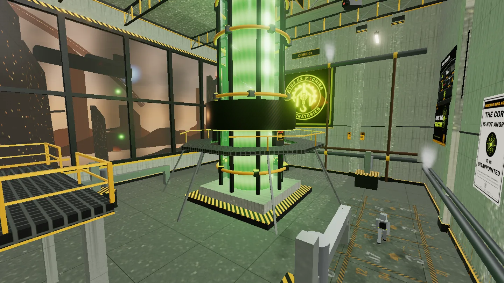
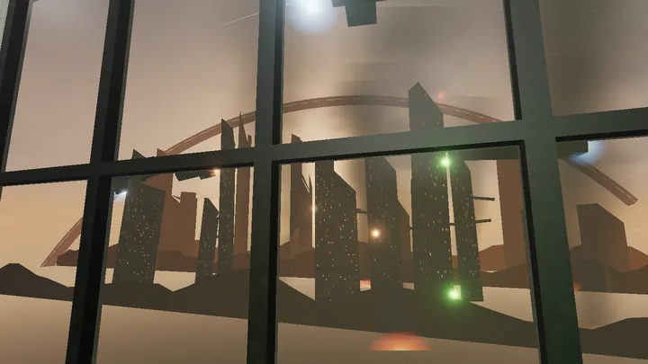
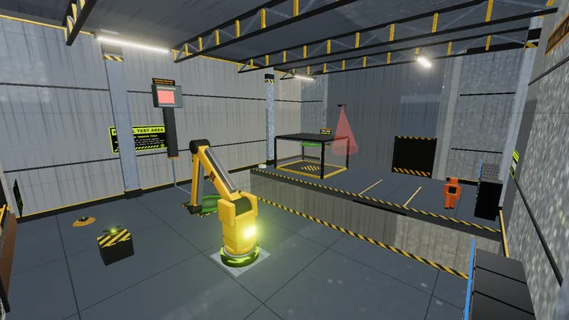
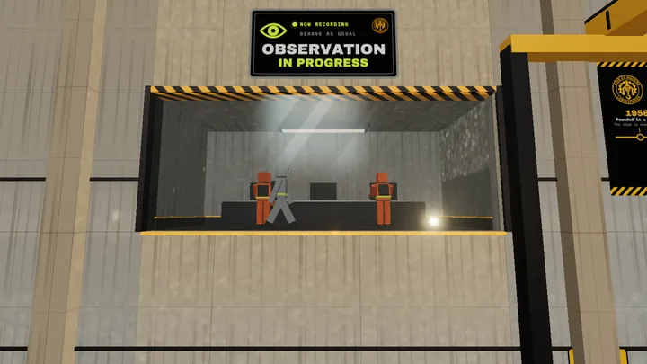
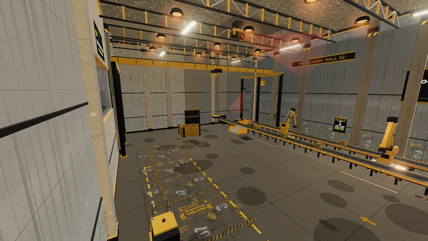
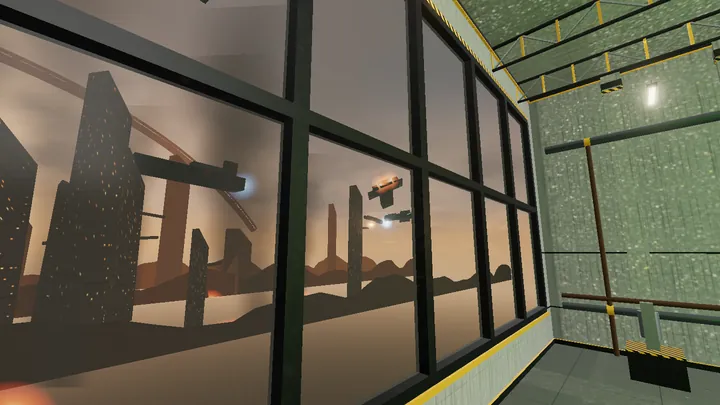

Repurposed
You are D-3X, a small maintenance unit in a DEXM facility that would rather you stayed put. You can't open doors or climb ladders on your own, but you can take over the machines around you: factory arms, drones, a gantry crane and a little spider bot that walks up walls. Every room is a puzzle about which machine to borrow, and when.

READ THIS FIRST
This is a beta
THINGS WILL CHANGE
Unfinished on purposeTwo facilities are playable now, and I am still building the rest. Expect rough edges, placeholder voices and the odd crate that ends up somewhere it shouldn't. It works best on a desktop or laptop with a keyboard and mouse in a recent version of Chrome, Edge or Firefox. If something breaks, tell me what you were doing and I will fix it.
SURVEILLANCE STILLS
Inside the facility
CAPTURED IN GAME





OPERATING MANUAL
How it plays
TWO FACILITIES SO FAR
What you do and the controls
- Look at a machine and possess it, then use what it can do that you can't.
- Arms lift and throw, drones fly and zap panels, the crane lowers crates from above, and the spider bot climbs walls and squeezes into service shafts.
- Some rooms have a second way through. The facility won't point them out.
SUPPLY ROOM
Support the lab
LINK OPENS ANOTHER SITE
Repurposed is free while I build it. If you enjoyed it and want to help keep the bench light on, a coffee goes a long way.